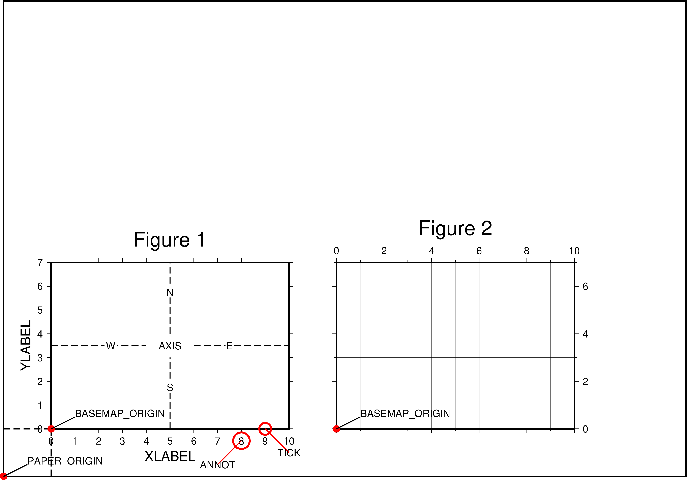

4.14 词汇表¶
在GMT中有不少与绘图有关的专业词汇。这些英文词汇没有固定的中文翻译，因而这里统一给出本文所使用的中文翻译，并在图中指出这些词汇的含义。

- 纸张原点（PAPER_ORIGIN）
- 一张纸，无论横着放还是竖着放，纸张的原点都位于纸张的最左下角。图中最外部的黑色边框代表纸张的边界。左下角的红点即纸张原点的位置。
- 底图（BASEMAP）
- 底图是一个抽象的概念，可以认为图1中黑色边框就是一个底图。
- 底图原点（BASEMAP_ORIGIN）
- 底图原点位于每一张底图的左下角，如图中红点所示。通过
-X和-Y选项可以控制底图原点相对于纸张原点的位置。 - 坐标轴（AXIS）
- 每个底图都有四条边，分别称为W、E、S、N。四条边可以显示也可以不显示。
- 标签（LABEL）
- 标签用于表明每个坐标轴的含义，即图中的XLABEL和YLABEL。
- 标题（TITLE）
- 每张底图都可以有一个标题，标题默认位于底图的上方，即图中Figure 1所在位置。
- 标注（ANNOT）
- 如图中所示，即每个坐标轴上的数字
- 刻度（TICK）
- 如图所示，刻度指每个坐标轴上的刻度线
- 网格线（GRID）
- 如图2所示。
- 子图
- 在一张纸上可以绘制多个底图，每个底图称为一个子图，通过使用
-X和-Y选项可以调整每个子图相对于纸张原点的位置。图中图1和图2是整张图的子图。